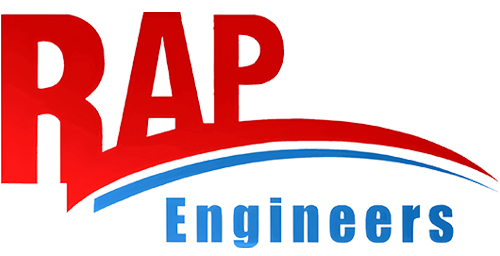
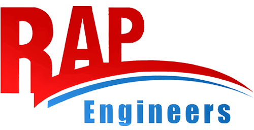

Drum Type Diverters (DTD) are specifically designed to divert or converge dry bulk materials—such as powders, pellets, kibbles, and granules—with minimal product degradation in pneumatic conveying systems.
They are suitable for both pressure and vacuum conveying
applications.
Sealing options include silicone and polyurethane, selected based on
the application requirements :
- Static Silicone Seals are suitable for pressure conveying up to 2 bar(g)
- Dynamic Silicone Seals are ideal for higher-pressure applications, supporting up to 6 bar(g)
DTD units are available in sizes ranging from 50 mm to 200 mm.
- It is used with DT type RV. It's a transition piece connecting the RV outlet to the conveying line
- It has a flange connection (available in DIN / ANSI / JIS) on the top and pipe connection (available in different sizes) on the bottom
- Available in mild steel & stainless steel construction
- Body, end cover and plug in Gravity Die Cast Aluminum. Product contact surface in SS
- Used in both converging and diverging application
- SDTD static silicone seals used in pressure conveying up to 2 bar g
- DTD inflatable silicone seals used in pressure conveying up to 6 bar g
- DOptional - polyurethane seal available on request
- Vacuum conveying up to -0.5 bar g
- Maximum conveying product temperature 80 deg c
- Sizes - 50, 65, 80, 100, 125 & 150mm
- Actuation - Cylinder operated
Diverter Valves direct material from one source to multiple destinations and make sure that conveying air and product are forwarded with low resistance.
.gif)


Diverter Valves direct material from one source to multiple destinations and make sure that conveying air and product are forwarded with low resistance.

- Body, end cover and plug in SS
- Used in diverging & converging application
- SDTD static silicone seals used in pressure conveying up to 2 bar g
- Vacuum conveying up to -0.5 bar g
- Maximum conveying product temperature 80 deg c
- Sizes - 150 ,200 & 250mm
- Actuation - Actuator

- Body available in Cast Iron, Aluminum and Stainless steel version
- Used in diverging application
- Y- type diverter have flap assembly and seals in polyurethane
- Maximum working pressure is 250 mbar and vacuum -0.2 bar
- Maximum conveying product temperature 80 deg c
- Sizes - 150 & 200mm
- Actuation - Actuator & Electric drive Connection :
- Flange Connection
- Pipe Connection

Scale Valve (SV-A also known as a Bottom Diverter or Fill Vent Diverter) is a pneumatically actuated diversion valve designed to divert bulk solids during pneumatic transport. It is designed for applications like dosing, weighing, batching and filling.
Principle Operations
- Straight-through mode: Inlet and outlet aligned; material flows straight thru.
- Divert mode: the leaf rotates to redirect material into a weigh hopper or scale vessel; conveying air is vented separately.

FEATURES
OPTIONS